RPG Maker Relationship System Step-by-Step Tutorial
Add depth and emotion to your game by building Trust, Friendship and Romance with surrounding characters, shaped by the player's own dialogue choices.
All RPG Maker EnginesMid-level Tutorial~45 min

Good news: this system works with any version of RPG Maker. If you use MZ or MV, open the demo file and follow along. On another engine? Recreate the event commands shown below.
Download here!
What you'll learn today
We'll create dynamic character bonds that change as the player talks to an NPC. Three relationship types, all built with simple variables and conditional branches:
1
Trust level 💔
Starts full and can be broken by rude actions. Great for gating quests, dialogue or storyline branches.
2
Friendship level 🌱
Builds over time through kind dialogue choices, a strong bond might unlock party invites, perks or backstory reveals.
3
Romance level 💘
A long-term romantic connection that evolves with the story, for rare items, custom cutscenes and more.
Lite vs. Pro: this tutorial covers the free Lite version, built around a single NPC to keep things clear. A free Pro version adds multi-character support, layered/unlockable paths and a tavern map, available to email subscribers via the Anya & Lolo Club.
Before you start
1
If you have MZ/MV
Open the provided demo file. The key commands sit in the top-left corner of the demo map, organized into squares for learning (one Autorun event and one NPC event). For multiple maps, move them into Common Events and trigger with a switch.
2
If you use a different engine
No problem, recreate the commands manually. Place setup events in the top-left corner first, then move them into Common Events once you're happy.
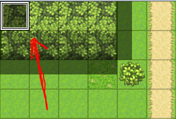
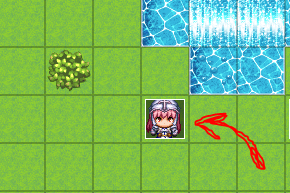
Part 1. Laying the foundation 🎭
First we create the core tracker using three variables. ~10-min setup
Three trackers
TrustLevel, starts strong, but can be broken 💔FriendshipLevel, builds from scratch 🌱RomanceLevel, also builds from zero 💘
1
Create your relationship trackers
Double-click a tile to open the Event Editor and name the event "Set Relationship Levels". Go to
Game Progression → Control Variables → Single Variable and create three New Variables: TrustLevel, FriendshipLevel, RomanceLevel.2
Set the starting values
Set Friendship and Romance to
0 so they build over time. Set Trust to 3 (choose "Set" and enter 3 in the Constant box). Your three lines should read:
◆Control Variables：#0002 FriendshipLevel = 0 ◆Control Variables：#0003 RomanceLevel = 0 ◆Control Variables：#0001 TrustLevel = 3
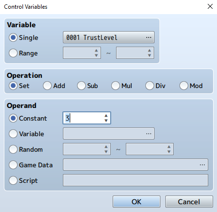
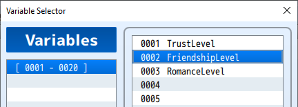
Why start Trust at 3? Think of it like heart containers in Zelda ❤️❤️💔, it starts full and depletes with rude choices. After 3 bad choices it hits 0 (broken). Friendship and Romance work the opposite way: they start empty and fill up with positive interactions.
3
Run it once at startup (safely)
This event must run once to set the variables, then turn itself off. Change the Trigger to Autorun, then add
Control Self Switch → [A]: ON right after the three variables. A non-stop Autorun would freeze the game, so the Self Switch is essential.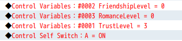
4
Add a blank Page 2
Click New Event Page and set its Condition to Self Switch [A] is ON. Leave Page 2 completely blank. Now the event runs Page 1 once, flips Self Switch A, and switches to the empty Page 2, so it stops running. Clever and safe!
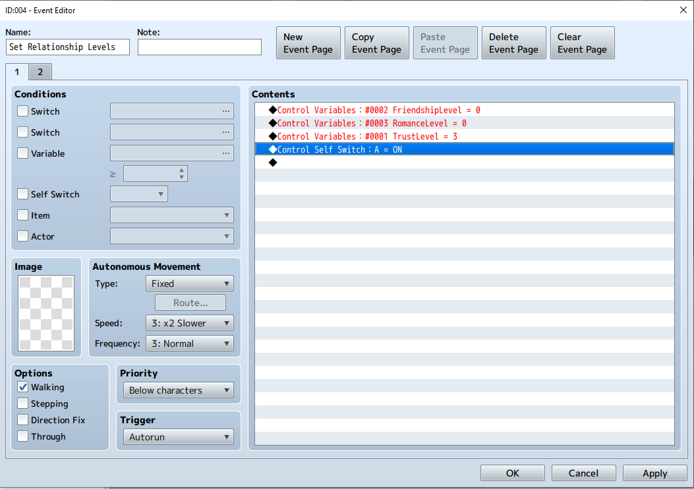
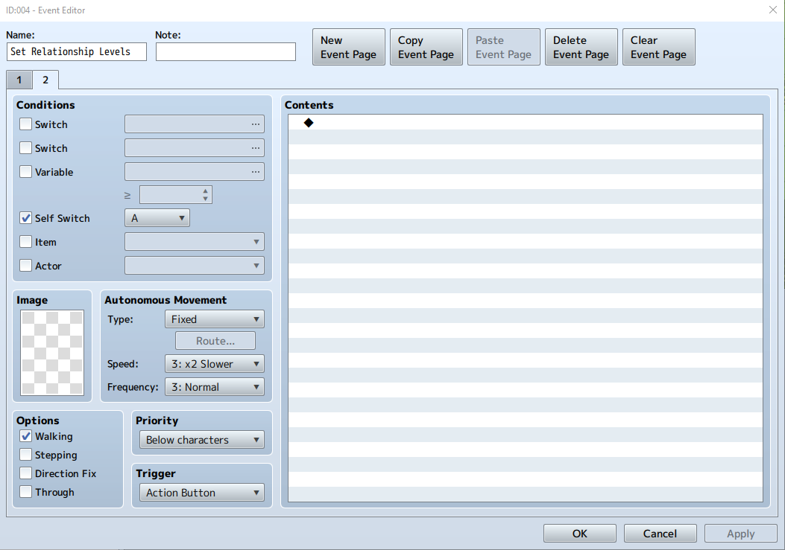
Part 2. Meet your first love interest 💖
Now let's give the player someone to connect with. ~20-min setup
1
Create the "Guard Girl" NPC
Double-click a clear tile to create a new Event. Pick a girl guard sprite (the pink-haired one on the "Actor 2" sheet) and name the event Guard Girl.
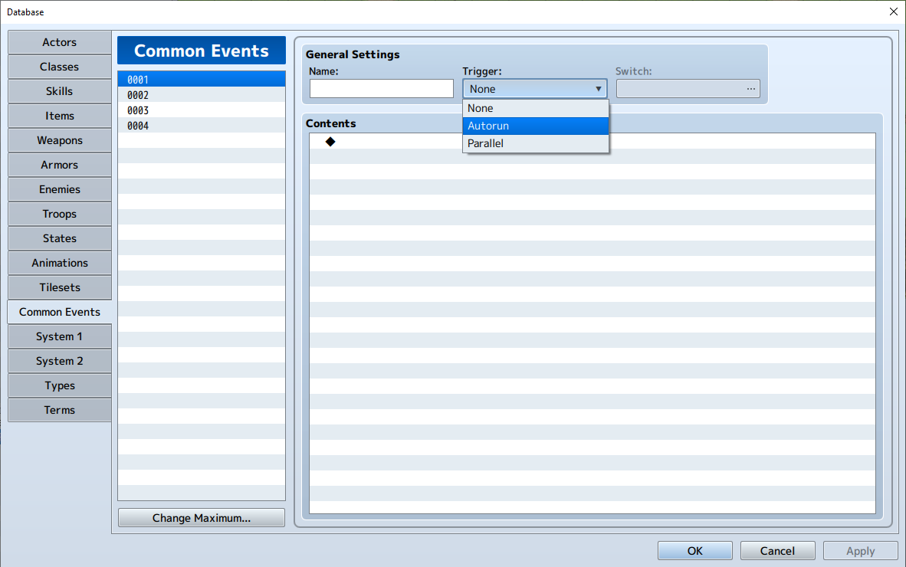
2
Give her a greeting and choices
Add a
Show Text like "Can I help you?". Then add Message → Show Choices with four options:
You seem nice. (Friendship) Your hair shines brighter than the armor! (Romance) Out of my way! (Trust) Nevermind... (Cancel)Set Default to Choice #1 and Cancel to Choice #4.
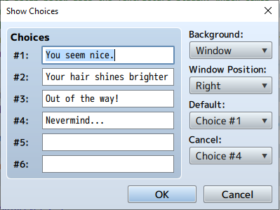
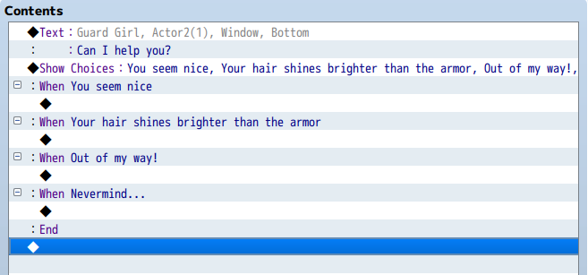
Playtest now! Walk up to the Guard Girl and press the action button, she should greet you and show the four choices. If nothing happens, make sure the Trigger is set to Action Button (or Event Touch). Add an
Exit Event Processing at the end of each branch so each conversation closes cleanly.
Part 3. Connecting dialogue to the trackers 🌱
Let's turn each choice into a real interaction. We'll start with the Friendship branch ("You seem nice").
1
Add a Friendship point
At the start of the branch:
Control Variables → FriendshipLevel → Add → 1. You'll see ◆Control Variables：#0002 FriendshipLevel += 1.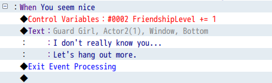
2
React based on the current level
So she doesn't repeat herself, add
Conditional Branch → FriendshipLevel ≥ 3 and tick "Create Else Branch". The top tier (≥ 3) shows a celebration; the Else shows progress.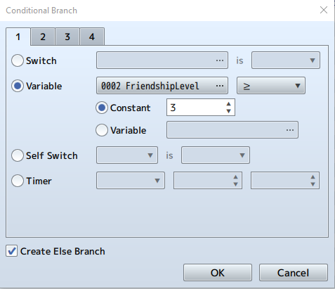
3
Celebrate the milestone
Inside the If (≥ 3), add a Show Text like
Can you feel it? We've become \C[29]Good Friends\C[0]!, the color code \C[29] highlights the words. Add an Animation, Sound or Balloon icon to make it feel special.4
Track progress in the Else
In the Else section, show how many points remain, and make it smart: nest conditionals so the message changes from "3 more" → "2 more" → "1 more" as the player gets closer. A simple point count becomes a visible journey!
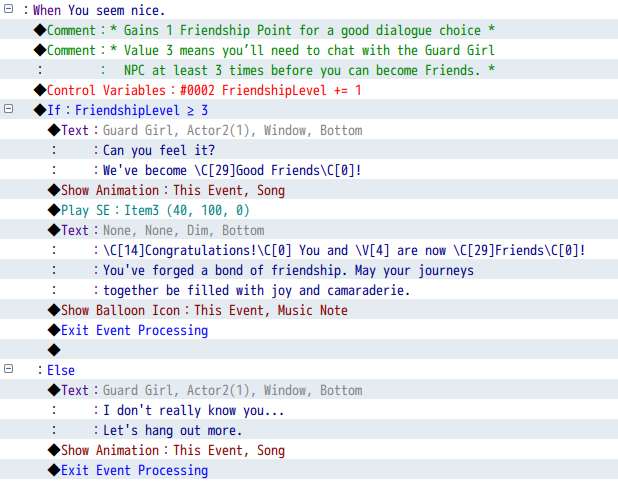
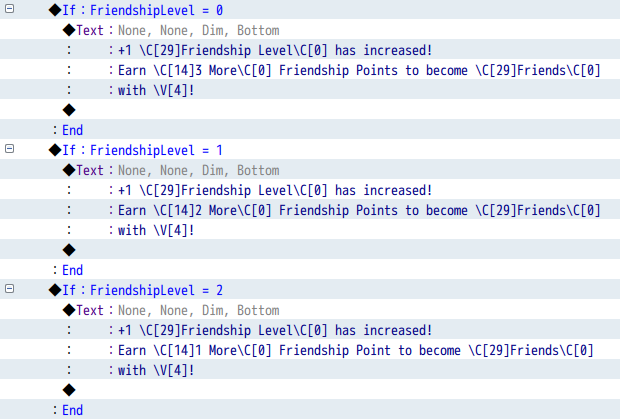
Playtest tip: temporarily change the check from
≥ 3 to ≥ 1 to see the celebration immediately, then change it back.
Your turn: build the Romance branch 💝
Use the exact same logic for the "Your hair shines brighter than the armor!" choice. Your 5-step checklist:
1. Add
2. Insert an If/Else and check
3. Create a romantic success message (hearts, a color like
4. Add progress tracking for Romance levels 0, 1 and 2
5. Use a romantic animation (Radiation) and a Heart balloon icon
+1 RomanceLevel at the start (use variable #0003, not Friendship!)2. Insert an If/Else and check
RomanceLevel ≥ 33. Create a romantic success message (hearts, a color like
\C[27] for purple)4. Add progress tracking for Romance levels 0, 1 and 2
5. Use a romantic animation (Radiation) and a Heart balloon icon
Stuck? Re-read the Friendship section, the steps are identical, just swapping the variable.
A handy script ☝️ (Pro developer tip)
Hardcoding the event name "Guard Girl" into every Show Text gets painful if you rename her later. Instead, store the event's name in a variable:
$gameVariables.setValue(4, $dataMap.events[this._eventId].name);
Add this as a
Script command at the very beginning of the event. Now replace "Guard Girl" with \V[4] anywhere in Show Text, for example:
Before: Congratulations! You and Guard Girl are now Romantic Partners!
After: Congratulations! You and
After: Congratulations! You and
\V[4] are now Romantic Partners!
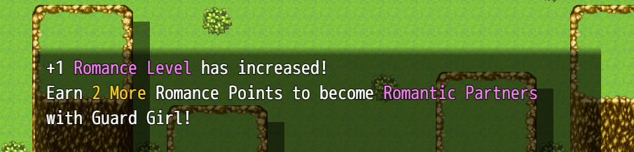
Don't worry about the script! Just copy and paste it exactly. It may preview as 0 in the editor, but it works perfectly in-game, and updates automatically if you rename the event.
Part 4. The Trust branch, please don't break it! 💔
The "Out of my way!" branch works in reverse: instead of filling up, we deplete Trust. Each rude choice removes one heart; at 0, trust is broken.
1
Check if already broken
At the start of the branch, a Conditional Branch checks
TrustLevel ≤ 0. This "locked out" state catches players who already broke trust and shows a cooldown line immediately.2
Subtract a Trust point
If trust isn't broken yet, in the Else branch subtract a point:
TrustLevel -= 1. Note we use -= 1 (subtract), not += 1!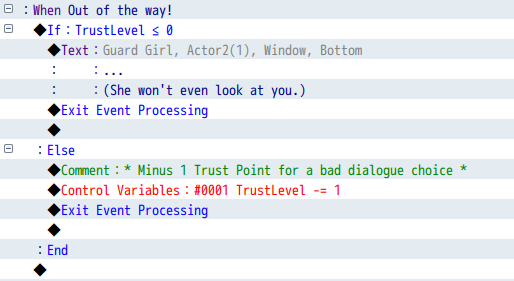
3
Warn, or break
Check
If TrustLevel ≥ 1: show a warning like "Woah, okay." In its Else (trust just hit 0), show the "broken now" reaction.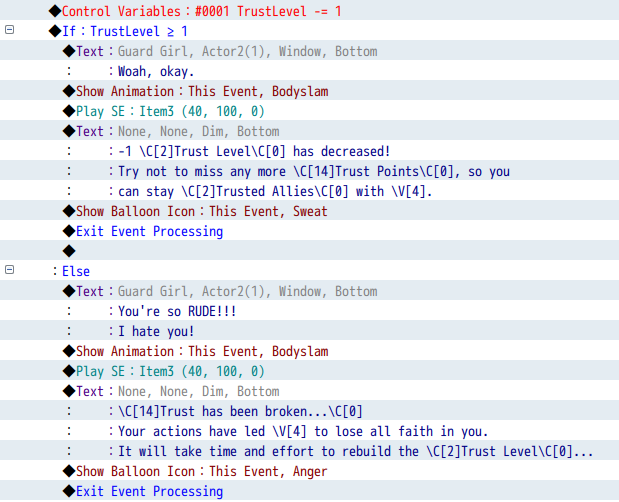
Test it: be rude three times. 3→2 "Woah, okay…" (warning), 2→1 "Woah, okay…" (warning), 1→0 "You're so RUDE!!!" (broken now), then any future choice at 0 → "… (She won't even look at you.)" (cooldown).
Beyond basics (for ambitious devs)
Add an apology mechanic to slowly rebuild trust, trust-gated quests (NPC only helps if Trust ≥ 2), or a witness system where other NPCs react if you're mean to their friend.
Part 5. On-screen display (HUD) 🎯
Let's show Trust, Friendship and Romance on screen, updating in real time. ~15-min setup
1
Turn on the TextPicture plugin
In MZ, open the Plugin Manager and enable the built-in TextPicture plugin (no configuration needed). In MV, the DTextPicture plugin is already included.
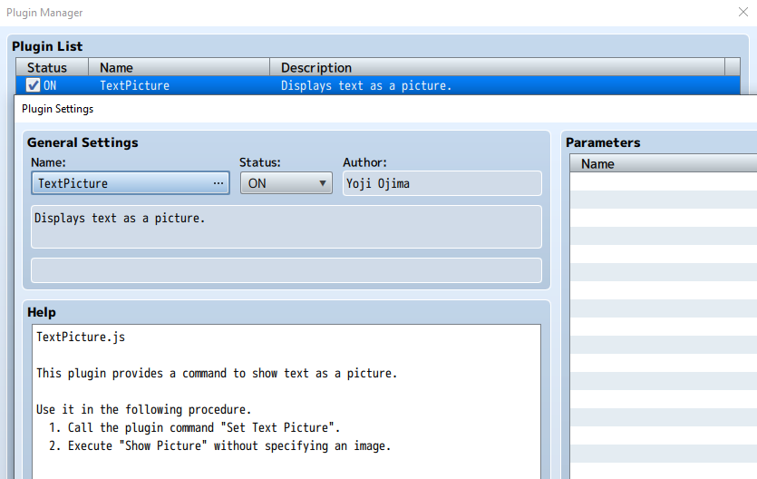
2
Add the display commands
At the very beginning of the Guard Girl event, add a Plugin Command with the text, then an empty Show Picture to draw it:
MZ: TRUST \V[1] | FRIENDSHIP \V[2] | ROMANCE \V[3] MV: D_TEXT \c[17] TRUST \V[1] | FRIENDSHIP \V[2] | ROMANCE \V[3] \c[0] ◆Show Picture：#1, None, Upper Left (505,220), (100%,100%), 255, NormalWant it prettier? Try icons:
TRUST 🏺\V[1] | FRIENDSHIP 🌼\V[2] | ROMANCE 💘\V[3].
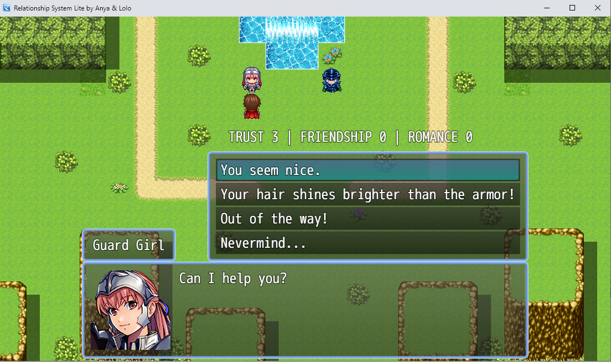
Don't forget to clean up! Add
◆Erase Picture：#1 right before Exit Event Processing in every branch, so the display disappears when the conversation ends. Want it visible all the time? Use a Parallel event that constantly refreshes Picture #1.
🚀 Where to go from here
You've built a professional relationship system, dynamic tracking of three types, meaningful choices, visual/audio feedback, a live HUD, milestone celebrations and pro touches like cooldowns and dynamic names.
The free Pro version adds multi-NPC support (four example characters), advanced dynamics (instant friendships, trust-only setups), and layered paths where Romance only unlocks after enough Friendship. It's free for subscribers, join the Anya & Lolo Club for the download link.